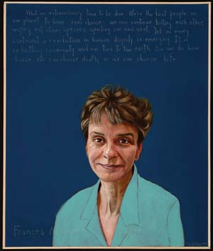

ROBERT SHETTERLY
“What an extraordinary time to be alive. We’re the first people on our planet to have real choice: We can continue killing each other, wiping out other species, spoiling our nest. Yet on every continent a revolution in human dignity is emerging. It is reknitting community and our ties to the Earth. So we do have a choice. We can choose death; or we can choose life.” — Frances Moore Lappe